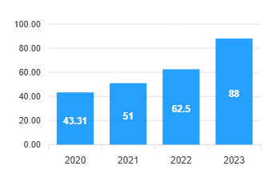

Welcome to National Institute of Technology Warangal
Search
Reset
Institute
Administration
Academics
R&D
Students
Alumni


News / Events
In May 2024, NIT Warangal introduced 'Amma,' a mobile application designed to assist children aged 1 to 5 with hearing impairments and speech delays. Developed by Dr. K.V. Kadambari and final-year Computer Science students, the app analyzes audio inputs to provide corrective feedback, enhancing speech skills. The application was tested under the supervision of audiologists and has been appreciated by the District Early Intervention Centre.
In October 2023, NIT Warangal was awarded a 5G Use-Case Lab by the Department of Telecommunications, Ministry of Communications. This initiative aims to promote the development and experimentation of 5G applications across various sectors, including education, agriculture, and healthcare. The lab will serve as a platform for students, faculty, and industry professionals to innovate and test 5G-based solutions.
On October 10, 2023, NIT Warangal celebrated its 65th Foundation Day. The event featured notable speakers, including Dr. Komal Kapoor, who highlighted the institute's contributions to technical education and research. During the ceremony, the NIT Warangal Alumni Association launched the NITWAA App to connect the global alumni network and introduced a group health insurance plan for alumni and faculty members.
In August 2023, NIT Warangal signed Memoranda of Understanding with four esteemed institutions: IIM Visakhapatnam, IIIT Kurnool, IIT Bhubaneswar, and IIT Jammu. These collaborations aim to establish a shared faculty pool, facilitate student exchange programs, and promote the exchange of academic resources, thereby enhancing educational and research opportunities.
During the 66th Foundation Day celebrations in October 2024, NIT Warangal honored several distinguished alumni for their significant contributions in various fields. Notably, Jaiteerth R. Joshi, Programme Director at the Defence Research & Development Laboratory (DRDL), received the Distinguished Alumnus Award for his efforts in skill development of engineering students, enhancing their industry readiness.

Placement Statistics

I am glad that I have been given an opportunity to serve as the Director of National Institute of Technology (NIT) Warangal-the oldest one in the bracket of first 17 NITs. It is an honour and privilege for me to lead this prestigious institute which has a rich history of its distinction in teaching, research and service to the nation. It is the first regional engineering college whose foundation stone has been laid by the former prime minister, Pandit Jawaharlal Nehru in the year 1959. Over a period of more than six decades, NIT Warangal has emerged as one of the leading institutions in engineering and technology. Warangal is the second largest city of the state of Telangana, Hyderabad being the first one which has several places of interest to visit. Some of the cultural heritages worth seeing in Warangal are Ramappa Temple, Bhadrakali Temple and thousand pillar temple. NIT Warangal is poised to create an ambience for nurturing innovation, incubation, creativity and excellence within its faculty and students towards achieving the sustainable development goals. We emphasize on student centric education with interdisciplinary research and development for the benefit of Industry and Society.NIT Warangal becomes a preferred institution for top rankers in Joint Entrance Examination (Main) because of its excellent teaching learning process, infrastructure that a student needs for effective learning. Our alumni have received distinguished recognitions in their chosen areas of profession and extend support towards sustainable development of the institute. I invite participation of all the stakeholders in the growth plan of the institute to steer it to the next level of success in all fronts.